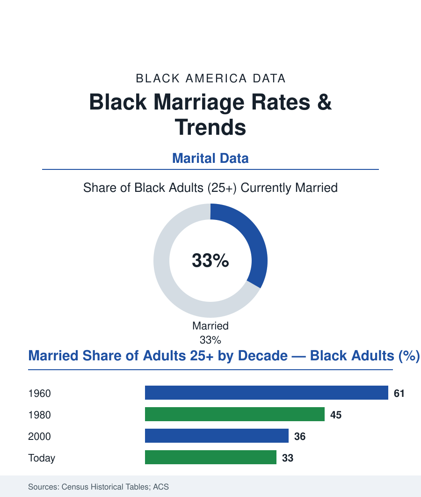

Black Census
Black Marriage in the Data: Rates, Timing, and the Economics Beneath Them
About a third of Black adults are married today, down from two-thirds in 1960 — a trend the data tie to wages, the removal of men from their communities, and women's rising education. The marriage file.

In 1960, roughly three in five Black adults were married and living with a spouse. Today the share is close to one in three — the steepest marital decline of any group in the Census Bureau's historical tables, and one of the most argued-over trends in this entire atlas. Behind the argument, the data have quietly converged on the machinery: the marriage rate follows the male wage, the sex ratio, and the education table more faithfully than it follows any sermon. This article reads the marriage file.
The Trend and Its Timing
The census series draws the curve in its decades: the Black marriage rate tracking near the white rate through the mid-twentieth century (the 1960 rows within a few points of each other, the share of Black children in two-parent homes the era's majority), then the divergence — the 1970s and 80s declines arriving alongside the manufacturing file's collapse in the cities (the steel and packinghouse articles' closed plants removing, in the sociologist William Julius Wilson's famous formulation, the 'marriageable men' — his index of employed men per hundred women falling in the urban Black data to levels the marriage market could not clear), and the decades of mass removal that followed (a subject whose own data sit outside this site's scope, but whose demographic shadow is unavoidable in the sex-ratio rows: the prime-age Black male population absent from the community counts in the census's own group-quarters tables, the adult sex ratio in the hardest-hit cities running to eighty-five men per hundred women and lower in the demographers' calculations — a marriage market missing a seventh of its men). The never-married share's rise is the modern series' headline (crossing half of Black adults in the recent ACS waves — the median age at first marriage climbing into the thirties, near the national pattern but later, the delay literature's economics: the credential-and-stability threshold young adults of all races now set, set against the wage file's terms for the men and the debt file's for both). Divorce runs in the same tables (Black women's divorce rates historically the nation's highest in the NCHS series, the remarriage rates lower — the ever-married population's outcomes sorting by the same economics as its entrances).
The Gaps Inside the Trend
The averages conceal the file's most instructive splits: by education, the college-educated Black population marries at rates approaching the national pattern (the graduate rows' marriage shares and stability measures converging with white graduates' in the Pew analyses — the sheepskin functioning as the era's dowry, two credentialed incomes the threshold the delay is for), while the non-college rows carry nearly the whole decline — the class divergence inside the race table mirroring the nation's, widened. By gender, the intermarriage article's asymmetry casts its shadow here (the professional Black woman's documented marriage-market squeeze — her education cohort's male counterpart thinned by every file in this atlas from the school discipline rows to the mortality tables, the demographers' 'marriage gap' literature her biography in aggregate). And the counter-data keep the file honest: married Black households' economics in the wealth tables (the married-couple median income and net worth at multiples of the single-headed rows — the two-income, two-credit-file machinery of the homeownership and inheritance files, marriage operating in the data substantially as an economic merger whatever else it is), the children's outcomes literature's correlations with the family-structure rows, and the stated-preference surveys (Black adults telling pollsters they value and expect marriage at rates the behavior lags — the aspiration in the data alongside the arithmetic, the gap between them the file's true subject). The policy era's experiments sit modestly in the evidence (the marriage-promotion programs of the 2000s evaluating to small effects in the federal studies — the data's verdict that the constraint was never information about marriage's benefits, which the population already believed, but the wages and the ratios, which the programs did not move).
Reading the Marriage Data
A rate is not a value, and this file refuses both easy readings: the decline is not a culture's failure — the same population married at the national rate when the factories were open — and it is not a fiction — the wealth and child tables price the trend precisely. Marriage in the data behaves like what it economically is: a merger two people undertake when the combined firm looks solvent. The census counts the weddings. The wage tables, the sex ratios, and the diploma rows explain the guest list.
More in Black Census
The Black Population of the United States: Size, Definitions, and Distribution
The Black population of the United States totals 52.8 million — 15.4 percent of the nation. How the Census Bureau defines and counts the population, and where it lives.
Black Median Household Income in the United States
Black median household income stands at $56,490 in the Census Bureau's annual income report — how the figure is measured, how it compares, and what drives it.
The Black Poverty Rate: Levels, Children, and the Long Trend
The official Black poverty rate is 17.1 percent — against 11.1 percent nationally and 7.7 percent for non-Hispanic White Americans. How poverty is measured and what the data show.
Source: U.S. Census Bureau historical marital status tables; American Community Survey; Pew Research Center marriage studies; National Center for Health Statistics.